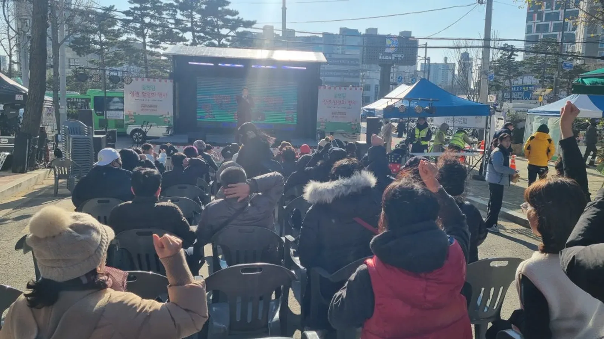

Guide
행사 준비 공통 정보
지역과 상관없이 행사 준비에 두루 쓰이는 글입니다.

행사 준비 공통 · 2026년 11월 23일
실내 에어바운스 대여, 크리스마스 강당에 들어갈까요
실내 에어바운스 대여를 검토하는 학교와 유치원 선생님이 크리스마스 장식, 무대, 아이들이 기다릴 자리까지 포함해 강당을 확인하고 장비를 쓸지 다른 놀이로 바꿀지 정하는 방법입니다.

행사 준비 공통 · 2026년 11월 23일
단체 게임 레크레이션, 송년 인사를 박자로 잇는 3단계
단체 게임 레크레이션을 맡은 사내 진행자를 위한 송년회 마무리 놀이입니다. 박수를 되돌려 주고, 옆자리로 넘기고, 마지막 쉼에서 연말 인사를 건네는 방법을 예시로 풀었습니다.
행사 준비 공통 · 2026년 11월 22일
회사 송년회 프로그램 감사 인사로 여는 진행 순서
회사 송년회 프로그램을 맡은 총무와 인사 담당자를 위한 구성안입니다. 동료의 일을 떠올리는 질문을 만들고 식사와 대화, 합동 놀이를 잇는 방법을 예시 식순으로 살펴봅니다.

행사 준비 공통 · 2026년 11월 22일
초등학교 학예회 학생 사회와 어른 사회의 차이
초등학교 학예회에서 학생이 자기 반 작품을 소개하고 어른이 뒤에서 돕는 방법입니다. 소개 카드의 질문, 합주와 낭독의 첫 소리, 대사가 막혔을 때의 약속을 정리합니다.
행사 준비 공통 · 2026년 11월 21일
어린이집 크리스마스 행사, 공연과 참여 놀이의 차이
어린이집 크리스마스 행사를 준비하며 공연 중심과 참여 놀이 중심의 차이를 비교합니다. 아이들의 익숙함과 교사의 역할, 가족 참여 여부에 맞춰 사회자와 레크리에이션 상담 방향을 정리합니다.

행사 준비 공통 · 2026년 11월 21일
경로잔치 레크리에이션, 연말 모임을 위한 4가지
경로잔치 레크리에이션을 준비하는 기관과 경로당 담당자를 위해 연말 인사와 참여 놀이의 균형을 정리합니다. 앉아서 함께하는 놀이, 노래와 대화의 연결, 사회자 상담 방향을 살펴보세요.
행사 준비 공통 · 2026년 11월 20일
유치원 학예회 사회자와 함께 정할 진행 순서
유치원 학예회를 준비하는 교직원을 위해 아이들의 발표와 사회자 연결 멘트의 구분, 대기 중 짧은 참여 놀이, 음향과 무대 전환 확인, 보호자 안내 순서를 정리했습니다.

행사 준비 공통 · 2026년 11월 20일
송년회 레크리에이션 무엇부터 골라야 할까요
송년회 레크리에이션을 준비하는 회사 담당자를 위해 테이블 참여형과 무대 대표형 게임의 차이, 참가자 선택권, 게임도구와 음향 확인, 프로그램 조합 방법을 정리했습니다.

행사 준비 공통 · 2026년 11월 19일
행사 참석 인원 집계: 입장·재입장·이탈 수 구분
행사 참석 인원 집계를 맡은 담당자를 위해 신청자와 실제 입장자의 차이, 출입구별 중복 기록, 재입장과 이탈 처리, 중간 보고에 반드시 붙일 집계 기준을 정리했습니다.

행사 준비 공통 · 2026년 11월 19일
행사 순차 통역 진행: 발화 단위·마이크·멈춤 신호
행사 순차 통역 진행을 준비하는 담당자를 위해 발표와 통역의 차례, 고유명사 자료 공유, 마이크 위치, 이해하지 못한 대목의 확인 신호와 현장 안내 문장을 정리했습니다.

행사 준비 공통 · 2026년 11월 19일
행사 주차 안내 준비: 입구·허용 차량·만차 대안 구분
행사 주차 안내를 준비하는 담당자를 위해 행사장 주소와 차량 입구의 차이, 이용 가능한 차량 조건, 만차 때 확인할 대안, 현장 연락 창구를 나눠 정리했습니다.

행사 준비 공통 · 2026년 11월 19일
행사 추첨 응모권 검수: 접수·중복·호명 기준 정리
행사 추첨 응모권을 준비하는 담당자를 위해 참여 조건과 접수 마감, 중복 응모 확인, 추첨 중 판단을 맡을 사람, 결과 호명과 물품 전달의 연결 방법을 정리했습니다.

행사 준비 공통 · 2026년 11월 19일
행사 단체복 배부: 크기 선택·교환·미수령 구분
행사 단체복 배부 담당자를 위해 신청한 크기와 실제 수령품의 대조, 같은 색 다른 크기의 분리, 교환 가능한 상태, 미수령품과 확인 대기 물품을 나누는 방법을 정리했습니다.
행사 준비 공통 · 2026년 11월 18일
체험 부스 순회표 짜기: 조별 출발점과 빈 칸 활용법
체험 부스 순회표를 짜는 담당자를 위해 조와 회차를 축으로 놓은 예시, 부스별 수용 확인, 쉬는 칸 표기, 한 부스만 늦어졌을 때 바꿀 칸을 정리했습니다.
행사 준비 공통 · 2026년 11월 18일
행사 식권 관리: 묶음 배부부터 사용분 대조까지
행사 식권 관리를 맡은 담당자를 위해 묶음 단위 인계, 참가자에게 나간 표와 식사처에서 받은 표의 구분, 훼손 교환과 미회수분을 대조하는 방법을 예시 장부로 설명합니다.
행사 준비 공통 · 2026년 11월 18일
행사 셔틀 탑승 확인: 왕복 구간과 편도 변경 나누기
행사 셔틀 탑승 확인을 맡은 담당자가 갈 때와 돌아올 때의 신청을 따로 받고, 승차 장소 변경과 편도 전환, 차량별 실제 탑승을 구분할 수 있도록 구간별 확인표를 제시합니다.

행사 준비 공통 · 2026년 11월 18일
팀 경기 대진표 작성: 부전승·휴식·다음 상대 읽는 법
팀 경기 대진표 작성이 처음인 학교·기업 담당자를 위해 상대가 비는 자리, 경기 번호 연결, 연속 출전, 불참 때 남길 표시를 예시 표와 팀 대표용 안내문으로 정리합니다.

행사 준비 공통 · 2026년 11월 18일
행사 대기 신청 운영: 빈자리 제안과 참가 확정 구분
행사 대기 신청 운영을 맡은 담당자가 취소된 자리를 확인하고 대기자에게 제안한 뒤 참가 명단으로 옮기는 절차를 정리했습니다. 동반 신청과 답변이 엇갈릴 때 쓸 문구도 담았습니다.
행사 준비 공통 · 2026년 11월 17일
행사 외부 배송 수령: 수취 창구·미도착·오배송 인계
행사 외부 배송 수령을 준비하는 담당자를 위해 장소의 수취 가능 여부, 배송 정보, 봉인 상태와 수령 기록, 미도착·오배송의 연락 분기를 정리합니다. 장비 차량 반입이나 경품 재고와 구분해 배송 상자가 담당자에게 이어지는 과정을 안내합니다.
행사 준비 공통 · 2026년 11월 17일
행사 참가자 촬영 안내: 촬영 구역과 요청 창구 구분
행사 참가자 촬영 안내를 준비하는 담당자를 위해 기록 촬영의 목적과 활용 범위, 촬영을 원하지 않는 경우의 요청 창구, 촬영 담당에게 전달할 현장 제한을 정리합니다. 법률 판단과 별개로 실제 운영 내용을 일치시키는 준비 안내입니다.

행사 준비 공통 · 2026년 11월 17일
행사 전원 사용 협의: 사용 위치·변경·중지 연락 정리
행사 전원 사용 협의를 맡은 담당자가 장소 관리 담당과 장비 담당에게 전달할 정보를 정리합니다. 사용 후보 위치, 연결 전 확인, 추가 장비와 위치 변경, 사용 중지 연락을 나누며 전기 기술 판단을 대신하지 않는 안내입니다.
행사 준비 공통 · 2026년 11월 17일
행사 원격 발표 연결: 대기방·현장 소리·중단 대안 확인
행사 원격 발표 연결을 맡은 담당자가 발표자와 행사장 운영팀 사이에서 맞출 내용을 정리합니다. 접속 안내, 현장 소리와 화면 확인, 연결 대기와 중단 판단, 공개하지 않을 접속 정보를 나누며 특정 장비나 통신 품질을 보장하지 않는 실무 안내입니다.
행사 준비 공통 · 2026년 11월 17일
행사 임시 물품 표지: 공용·전용·확인 대기 구분
행사 임시 물품 표지를 만드는 담당자를 위해 물건의 용도와 사용 권한, 공용·팀 전용·확인 대기 상태를 구분하는 문구를 정리합니다. 물품 대장을 대신하지 않고 현장에서 잘못 가져가거나 사용하지 않도록 돕는 표지 설계 안내입니다.
행사 준비 공통 · 2026년 11월 16일
행사 진행 멘트 사전 점검: 민감한 질문과 즉석 표현 경계
행사 진행 멘트 사전 점검을 맡은 담당자를 위해 사용하지 않을 질문과 내부 표현, 즉석 참여 요청의 범위, 잘못 말했을 때 정정 연결을 정리합니다. 이름 발음이나 순서표와 별도로 발언 경계를 맞추는 안내입니다.

행사 준비 공통 · 2026년 11월 16일
행사 인쇄물 납품 검수: 교정쇄·묶음·실물 차이 확인
행사 인쇄물 납품 검수를 맡은 담당자를 위해 승인한 교정본과 도착한 실물, 종류별 묶음과 배포 단위, 누락·오인쇄 발견 시 분리와 추가 제작 확인을 정리합니다. 문구 작성 이후의 실물 확인 안내입니다.
행사 준비 공통 · 2026년 11월 16일
행사 무전 통신 규칙: 호출·복창·혼선·연락 불가 정리
행사 무전 통신 규칙을 준비하는 운영 담당자를 위해 호출명과 짧은 보고 형식, 들은 내용의 복창, 동시 송신과 연락 불가 시 대체 경로를 정리합니다. 업무 배정과 별도로 통신 방법을 맞추는 안내입니다.
행사 준비 공통 · 2026년 11월 16일
행사 신청 링크 점검: 모바일 입력부터 완료 화면까지
행사 신청 링크 점검을 맡은 담당자를 위해 공개 안내에서 신청 화면으로 이동하는 경로, 모바일 입력과 수정, 완료 안내와 마감 상태를 확인하는 방법을 정리합니다. 실제 신청자 정보를 쓰지 않는 점검 안내입니다.

행사 준비 공통 · 2026년 11월 16일
행사 장소 원상복구 확인: 사용 전 기록과 시설 인수
행사 장소 원상복구 확인을 맡은 담당자를 위해 사용 전 상태 기록, 임시 설치물과 기존 시설의 구분, 복구 범위와 남은 문제의 시설 인계를 정리합니다. 장비 반출과 장소 반환을 나누는 준비 안내입니다.
행사 준비 공통 · 2026년 11월 15일
행사 참여 편의 확인: 필요한 도움과 현장 조건 맞추기
행사 참여 편의 확인을 준비하는 담당자를 위해 이동·안내 이해·휴식 등 필요한 도움을 조용히 묻고 현장 조건과 대조하는 방법을 정리합니다. 진단명이나 법규 수치 없이 요청과 확인 결과를 연결합니다.
행사 준비 공통 · 2026년 11월 15일
행사 배경음악 인계: 말 시작·반복·종료 방식 맞추기
행사 배경음악 인계를 맡은 담당자를 위해 곡의 용도, 말이 시작될 때의 처리, 반복과 종료 방식, 운영석 교대 확인을 정리합니다. 공연 입장 큐시트와 구분한 재생 의도 점검표입니다.
행사 준비 공통 · 2026년 11월 15일
행사 짐 보관 준비: 맡김표·보관 위치·부분 반환 정리
행사 짐 보관 준비를 검토하는 담당자를 위해 접수 가능 물품, 맡김표와 위치 번호, 일부만 찾아가는 경우와 운영 종료 인계를 정리합니다. 분실물 접수와 구분한 임시 보관 창구 준비표입니다.
행사 준비 공통 · 2026년 11월 15일
행사 결정 승인 관리: 검토안과 실행본을 나누는 대장
행사 결정 승인 관리를 맡은 주최 측 담당자를 위해 요청·영향 검토·조건부 승인·배포·적용 확인을 하나의 대장으로 연결합니다. 여러 문서에 흩어진 결정의 충돌을 줄이는 준비 방법입니다.
행사 준비 공통 · 2026년 11월 15일
행사 대리 리허설: 대신 확인할 것과 본인 확인할 것
행사 대리 리허설을 준비하는 담당자를 위해 대리자가 확인할 이동·신호와 본인이 확인할 발화·동작을 구분합니다. 불참자의 미확인 항목을 남기고 도착 뒤 짧게 다시 확인하는 운영표입니다.
행사 준비 공통 · 2026년 11월 14일
행사 소모품 보충 계획: 구역별 잔량·요청·대체 기준
행사 소모품 보충 계획을 맡은 담당자를 위해 구역별 사용 물품, 예비 보관 위치, 잔량 확인과 보충 요청을 정리합니다. 경품 수령 기록이 아니라 행사 중 필요한 물품이 끊기지 않도록 운영하는 준비 방법입니다.
행사 준비 공통 · 2026년 11월 14일
행사 다국어 안내 준비: 번역문과 행동 지시 대조
행사 다국어 안내 준비를 맡은 담당자를 위해 필요한 언어 확인, 기준 문장 작성, 번역 검토와 변경 내용의 동시 전달을 정리합니다. 인명 발음이나 표지 디자인이 아니라 언어별 행동 지시가 같은지 확인하는 안내입니다.
행사 준비 공통 · 2026년 11월 14일
행사 견적 범위 비교: 포함·별도·미확정 항목 정리
행사 견적 범위 비교를 맡은 담당자를 위해 금액을 보기 전에 맞춰야 할 진행 구간, 장비와 운영 인력의 구분, 주최 측 준비 항목을 정리합니다. 서로 다른 제안을 같은 조건으로 읽고 미확정 질문을 남기는 실무 안내입니다.

행사 준비 공통 · 2026년 11월 14일
행사 게임 규칙 설명: 시연·연습·이해 확인 순서
행사 게임 규칙 설명을 준비하는 담당자를 위해 말로 안내할 내용과 직접 보여 줄 동작을 나눕니다. 시연자 선정, 연습 구간 표시, 시작 전 이해 확인과 늦게 온 참가자의 설명을 정리한 실무 안내입니다.
행사 준비 공통 · 2026년 11월 14일
행사 참가자 준비물 안내: 복장·개인 물품·제공품 구분
행사 참가자 준비물 안내를 작성하는 담당자를 위해 활동에 필요한 복장과 개인 물품, 현장 제공품과 선택 준비물을 나누는 방법을 정리합니다. 준비하기 어려운 참가자의 문의 경로와 변경 안내까지 함께 확인합니다.
행사 준비 공통 · 2026년 11월 13일
행사 휴식 후 재집결: 돌아올 장소·신호·미복귀 확인
행사 휴식 후 재집결을 준비하는 담당자를 위해 돌아올 장소, 재개 안내 신호, 자리를 비운 참가자의 확인 경로를 정리합니다. 행사 종료 귀가나 식순 시간 초과 조정과 달리 진행 중 잠시 쉬고 다시 합류하는 구간의 안내에 집중합니다.
행사 준비 공통 · 2026년 11월 13일
행사 개선 설문 만들기: 질문·응답 선택지·후속 조치
행사 개선 설문 만들기를 맡은 담당자를 위해 다음 준비에 연결할 질문, 응답하지 않을 선택지, 자유 의견 정리와 후속 조치표를 정리합니다. 참가자나 진행자를 점수로 줄 세우지 않고 프로그램과 안내 방식에서 바꿀 항목을 찾는 방법입니다.
행사 준비 공통 · 2026년 11월 13일
행사 주최·후원 표기 확인: 로고 원본과 노출 승인표
행사 주최·후원 표기 확인을 맡은 담당자를 위해 명칭과 역할 구분, 로고 원본 요청, 매체별 노출 승인과 수정 대조표를 정리합니다. 기관명을 읽는 발음이나 발표 파일 재생이 아닌 공개물에 무엇을 어떤 지위로 표시할지 다룹니다.
행사 준비 공통 · 2026년 11월 13일
행사 안내판 문구 검수: 목적지·행동·예외를 나누는 법
행사 안내판 문구 검수를 맡은 담당자를 위해 목적지 이름 통일, 표지별 행동 안내, 이용하지 못하는 경로의 예외 문구와 교체 확인을 정리합니다. 글자 크기나 무대 시야가 아닌 안내 내용의 일치 여부를 점검하는 실무 자료입니다.
행사 준비 공통 · 2026년 11월 13일
행사 게임도구 재배치: 회차 사이 회수·분류·출발 확인
행사 게임도구 재배치를 맡은 담당자를 위해 회차가 끝난 뒤 도구를 회수하고 다음 종목 상태로 준비하는 순서를 정리합니다. 장비 차량의 반입반출이나 경기 점수 대신 사용 중·회수 중·준비 완료 구분과 출발 확인에 집중합니다.
행사 준비 공통 · 2026년 11월 12일
행사 호명 발음표: 이름·기관명 읽기와 공개 전 확인
행사 호명 발음표를 준비하는 담당자를 위해 이름과 기관명의 읽는 법, 확인 출처, 공개 전 점검, 불확실한 호명의 보류 기준을 정리합니다. 수상 명단 선정이 아니라 실제로 읽을 문장을 다루는 준비 안내입니다.
행사 준비 공통 · 2026년 11월 12일
행사 기록 사진 요청서: 필요한 장면과 전달 범위 정리
행사 기록 사진 요청서를 만드는 담당자를 위해 필요한 장면, 촬영하지 않을 구역, 현장 변경, 원본 보존과 전달 범위를 정리합니다. 사진 촬영 서비스의 포함 여부와 별개로 주최 측이 준비할 실무 항목을 안내합니다.

행사 준비 공통 · 2026년 11월 12일
행사 시간 초과 조정: 줄일 순서와 유지·보류 결정권
행사 시간 초과 조정을 준비하는 담당자를 위해 유지할 순서, 줄일 수 있는 내용, 보류할 항목과 결정권을 정리합니다. 개별 공연의 시작 신호가 아니라 일정이 지연됐을 때 전체 운영에서 합의할 판단을 다룹니다.

행사 준비 공통 · 2026년 11월 12일
행사 무대 시야 점검: 객석의 가림과 글자 읽기 확인
행사 무대 시야 점검을 맡은 담당자를 위해 객석 위치별 가림, 화면과 표지의 가독성, 배치 변경 후 재확인을 정리합니다. 장비 성능이나 기술 기준을 단정하지 않고 현장에서 눈으로 볼 수 있는 범위를 확인합니다.
행사 준비 공통 · 2026년 11월 12일
팀 경기 점수 확인: 기록·이의 접수·결과 확정 순서
팀 경기 점수 확인을 맡은 행사 담당자를 위해 원기록과 집계표 구분, 이의 접수 창구, 재확인 판단, 결과 정정 안내를 정리합니다. 참가 역할이나 종목 구성 대신 점수가 달라졌을 때의 처리 흐름에 집중합니다.
행사 준비 공통 · 2026년 11월 11일
행사 객석 발언 운영: 질문 접수와 마이크 전달 확인표
행사 객석 발언을 준비하는 담당자를 위한 진행 체크리스트입니다. 질문 접수와 발언 순서 확인, 마이크 전달 위치, 발언 마무리 안내를 나누고 즉석 질문이나 참여를 원하지 않는 사람을 어떻게 안내할지 정리합니다.
행사 준비 공통 · 2026년 11월 11일
행사 장비 반입반출 확인: 차량·실물·장소 인수 체크
행사 장비 반입반출을 준비하는 담당자를 위한 확인표입니다. 장소의 반입 조건, 차량 도착과 하역 위치, 반입 물품의 상태 기록, 철수 뒤 실물 반환과 장소 인수를 구분해 협의할 항목을 정리합니다.
행사 준비 공통 · 2026년 11월 11일
행사 접수 명단 수정: 미등재·중복·현장 변경 처리표
행사 접수 명단 수정을 맡은 담당자를 위한 실무 체크리스트입니다. 신청 명단과 실제 도착 기록을 나누고 이름이 없거나 중복된 신청, 동명이인, 현장 요청을 승인 담당에게 연결하는 방법과 접수 종료 뒤 정리를 안내합니다.
행사 준비 공통 · 2026년 11월 11일
행사 종료 안내 준비: 귀가 경로·잔류 공간·마지막 방송
행사 종료 안내를 준비하는 담당자를 위한 실무 체크리스트입니다. 귀가 경로와 남아 있을 수 있는 공간, 수령·문의 창구, 마지막 방송 문구를 확인하고 관람객 퇴장과 장비 철수가 섞이지 않도록 협의할 내용을 정리합니다.
행사 준비 공통 · 2026년 11월 11일
행사 좌석표 변경 관리: 빈자리·동행·현장 수정 확인표
행사 좌석표 변경 관리를 맡은 담당자를 위한 준비표입니다. 좌석 번호와 배치도 기준을 맞추고 불참, 동행 요청, 현장 이동을 기록하는 방법부터 안내 직원과 진행자에게 변경 사항을 전달하는 순서까지 정리합니다.
행사 준비 공통 · 2026년 11월 10일
행사 분실물 접수 준비: 안내소 기록과 반환 확인
행사 분실물 접수를 준비하는 담당자를 위한 안내소 운영 체크리스트입니다. 습득 물건 기록, 공개 안내의 범위, 소유자 확인, 담당자 교대와 종료 뒤 인계까지 주최 측이 정할 항목을 정리합니다.
행사 준비 공통 · 2026년 11월 10일
행사 스태프 업무 분담: 구역 책임과 교대 인계표
행사 스태프 업무 분담을 준비하는 담당자를 위해 구역 책임자, 판단 권한, 교대 때 남길 기록을 정리합니다. 대기줄 배치가 아니라 운영 구역이 비거나 같은 일을 중복 처리하지 않도록 만드는 인계 안내입니다.
행사 준비 공통 · 2026년 11월 10일
행사 공연 큐시트 작성: 출연자 대기부터 퇴장 신호까지
행사 공연 큐시트를 준비하는 학교·기관·회사 담당자를 위한 실무 안내입니다. 출연팀 도착 확인, 소개 멘트와 음원 시작 신호, 무대 전환, 준비가 늦어질 때의 보류 기준을 표로 정리합니다.
행사 준비 공통 · 2026년 11월 10일
행사 발표자료 취합: 화면 파일 승인과 재생 확인표
행사 발표자료 취합을 맡은 담당자를 위한 실무 안내입니다. 발표 순서별 파일 이름, 수정 승인, 글꼴과 영상 재생 확인, 화면에 공개하면 안 되는 자료, 현장 교체와 종료 뒤 파일 정리까지 다룹니다.
행사 준비 공통 · 2026년 11월 10일
행사 경품 재고 관리: 입고·불출·미수령 인계표
행사 경품 재고 관리를 맡은 총무와 운영 담당자를 위한 준비 글입니다. 실물과 목록 맞추기, 무대 불출, 당첨 후 미수령 구분, 행사 종료 뒤 잔여 물품 인계를 한 장의 표로 정리합니다.
행사 준비 공통 · 2026년 11월 9일
송년회 시상식 명단 정리: 동명이인·불참·대리 수상 확인표
송년회 시상식 명단을 만드는 담당자를 위해 원본 버전 관리, 이름 표기와 읽는 법 확정, 불참과 대리 수상 처리, MC 공유본, 인수인계 양식을 정리했습니다.
행사 준비 공통 · 2026년 11월 9일
가족행사 대기줄 설계: 유모차·보행 통로·안내판 점검
가족행사 대기줄이 엉키는 이유와 해결 순서를 정리했습니다. 입구와 출구 분리, 유모차 자리, 보호자 시야, 역할표, 안내판 점검까지 담당자용으로 담았습니다.
행사 준비 공통 · 2026년 11월 9일
야외행사 우천 대안 준비: 장소 전환과 연락 기준 정리
야외행사 우천 대안을 준비하는 담당자를 위해 A안 B안 승인자, 대체 장소 확인, 두 번의 판단 시점, 안내 문구, 계약 확인 항목을 한 장으로 정리했습니다.
행사 준비 공통 · 2026년 11월 9일
행사 음향 문의 사진 준비: 전원·객석·반입 동선 확인표
행사 음향 문의 사진을 어떻게 찍어 보내면 좋은지 정리했습니다. 장소 전체, 객석, 운영 위치, 장비 라벨, 반입 동선까지 7개 항목 확인표와 파일 이름, 미응답 체크리스트를 담았습니다.
행사 준비 공통 · 2026년 11월 9일
워크숍 참여 선택권 설계: 강요 없는 팀빌딩 역할 나누기
워크숍 참여 선택권을 어떻게 설계할지 담당자용으로 정리했습니다. 선수·기록·시간·관찰 역할, 이유를 묻지 않는 빠지기 경로, 안내 멘트와 참여 평가 방법을 담았습니다.
행사 날짜가 정해지셨나요?
날짜 · 지역 · 인원 · 행사 종류만 알려 주시면 행사에 맞춰 상담 · 견적을 안내드립니다. 행사 중엔 통화가 어려우니 문자 · 카톡을 남겨 주세요.